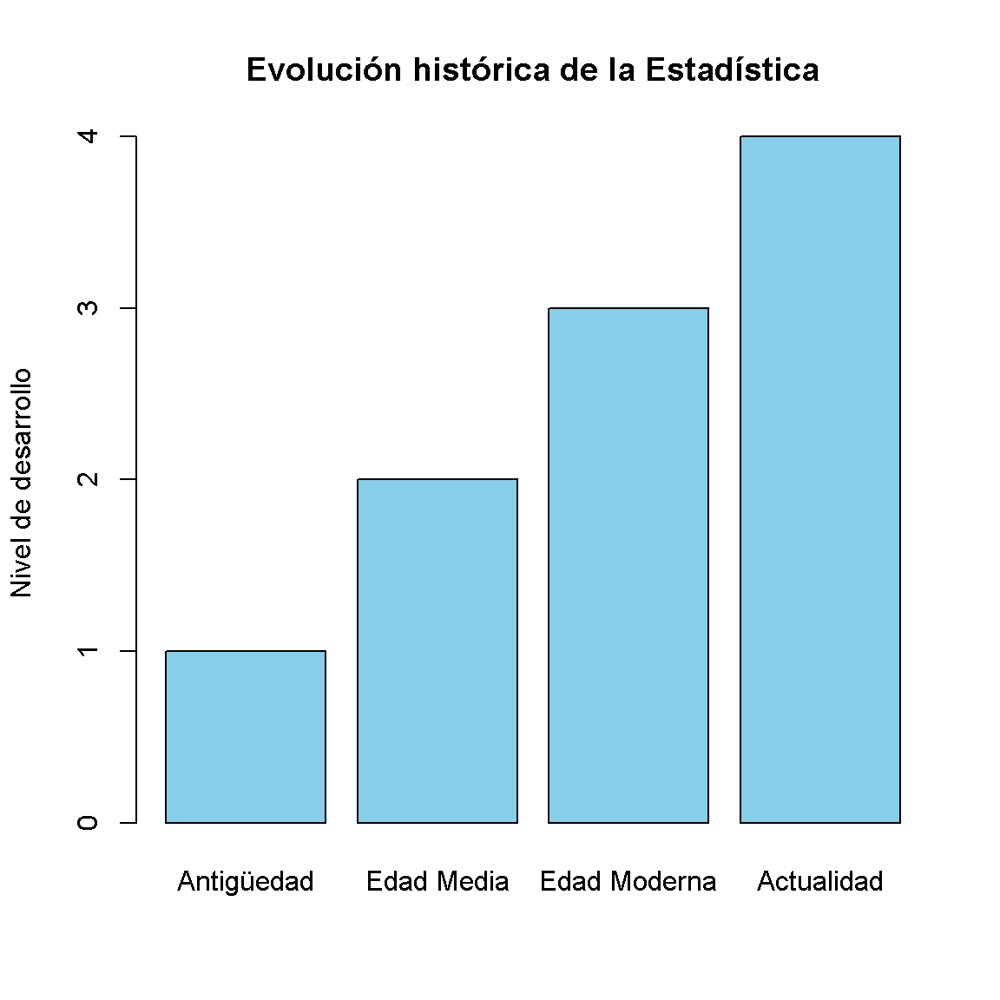
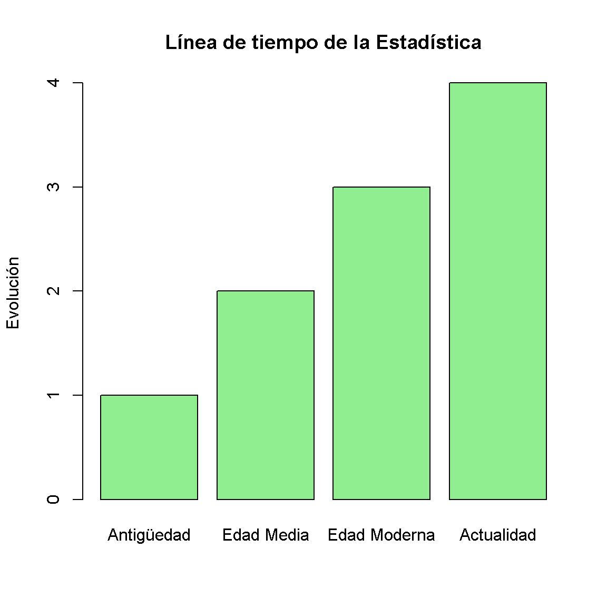
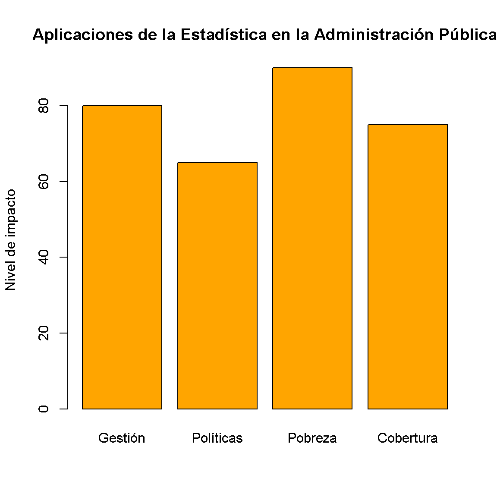

La estadística es una disciplina fundamental dentro de las ciencias sociales, administrativas y económicas, ya que permite transformar datos en información útil para la toma de decisiones. En el contexto de la administración pública, su importancia es aún mayor, debido a que facilita la planeación, el seguimiento y la evaluación de políticas, programas y proyectos orientados al bienestar de la población.
A través de la estadística es posible describir fenómenos sociales, identificar patrones de comportamiento y realizar análisis que apoyan la gestión eficiente de los recursos públicos. Herramientas como las tablas, los gráficos y las medidas de tendencia central permiten resumir grandes volúmenes de información de manera clara y comprensible.
Este trabajo aborda los fundamentos de la estadística, su evolución histórica, los conceptos básicos, la clasificación de variables y sus principales aplicaciones en la administración pública. De esta manera, se busca comprender cómo esta disciplina se convierte en un soporte clave para la toma de decisiones basada en evidencia y no en suposiciones.
2 Historia de la Estadística
La estadística es una disciplina fundamental para la recolección, organización, análisis e interpretación de datos. Su desarrollo ha estado estrechamente ligado a la evolución de las sociedades, la administración pública y la necesidad de tomar decisiones basadas en información.
3 Origen de la estadística
El origen de la estadística se remonta a las civilizaciones antiguas, donde los gobiernos necesitaban llevar registros de población, tierras, impuestos y producción. En este contexto, la estadística no era una ciencia formal, sino una herramienta administrativa.
Civilizaciones como Egipto, Babilonia, China y Roma realizaban censos y registros sistemáticos para controlar recursos y organizar el Estado.
4 Aportes de las civilizaciones antiguas
Egipto: registros de cosechas del Nilo y control de tierras.
Babilonia: sistemas de conteo y registros comerciales.
China: censos poblacionales desde hace más de 2000 años.
Roma: organización de censos para impuestos y servicio militar.
Estos aportes fueron la base del desarrollo posterior de la estadística moderna.
5 Evolución histórica
Durante la Edad Media, la estadística se utilizó principalmente para fines administrativos, especialmente en registros de nacimientos, defunciones y tributos.
En la Edad Moderna (siglos XVII y XVIII), la estadística comienza a formalizarse como disciplina científica gracias al desarrollo de las matemáticas y la probabilidad. Autores como John Graunt y William Petty realizaron los primeros estudios demográficos sistemáticos.
Posteriormente, matemáticos como Laplace y Gauss contribuyeron al desarrollo de la teoría de probabilidades y la inferencia estadística.
6 Desarrollo en la Edad Moderna
En esta etapa se consolida la estadística como herramienta científica. Se desarrollan técnicas de análisis de datos, estimación y probabilidad, permitiendo su aplicación en economía, demografía y ciencias sociales.
7 Importancia en la actualidad
Hoy en día, la estadística es fundamental en la administración pública, la economía, la salud, la educación y la investigación científica. Permite tomar decisiones basadas en evidencia, evaluar políticas públicas y mejorar la gestión del Estado.
8 Línea de tiempo de la Estadística
Tabla resumen
Periodo
Característica principal
Ejemplo
Antigüedad
Registros básicos de población y recursos
Censos en Egipto y China
Edad Media
Uso administrativo y fiscal
Registros de impuestos
Edad Moderna
Formalización matemática
Nacimiento de la probabilidad
Edad Contemporánea
Estadística como ciencia aplicada
Políticas públicas y big data
9 Gráfico de línea de tiempo
Ver código
periodos <-c("Antigüedad", "Edad Media", "Edad Moderna", "Actualidad")valores <-c(1, 2, 3, 4)barplot( valores,names.arg = periodos,main ="Evolución histórica de la Estadística",ylab ="Nivel de desarrollo",col ="skyblue")

La estadística ha evolucionado desde simples registros administrativos hasta convertirse en una ciencia esencial para la toma de decisiones en todos los sectores. Su importancia en la actualidad es indiscutible, especialmente en la gestión pública y el análisis de grandes volúmenes de datos.
10 Importancia de la Estadística en la actualidad
En la actualidad, la estadística se ha convertido en una herramienta esencial para comprender, analizar y tomar decisiones en un mundo cada vez más orientado por los datos. Su importancia radica en que permite transformar grandes volúmenes de información en conocimiento útil, facilitando la interpretación de fenómenos sociales, económicos, políticos y administrativos.
En el ámbito de la administración pública, la estadística es clave para la planificación y evaluación de políticas públicas. Gracias a ella, los gobiernos pueden medir indicadores como pobreza, desempleo, cobertura en salud, educación y calidad de vida, lo que permite orientar los recursos hacia las necesidades más urgentes de la población.
Asimismo, la estadística es fundamental en la toma de decisiones basadas en evidencia, ya que reduce la incertidumbre y permite sustentar las acciones con datos reales. Esto contribuye a una gestión más eficiente, transparente y responsable de los recursos públicos.
En el contexto actual de transformación digital y crecimiento del big data, la estadística ha adquirido aún mayor relevancia. Hoy en día se utiliza en áreas como la inteligencia artificial, el análisis de datos masivos, la economía digital y la evaluación en tiempo real de políticas y servicios.
En conclusión, la estadística no solo es una herramienta técnica, sino un pilar fundamental para el desarrollo de sociedades más organizadas, eficientes y orientadas a resultados.Línea de tiempo de la estadística
Ver código
periodos <-c("Antigüedad", "Edad Media", "Edad Moderna", "Actualidad")eventos <-c(1, 2, 3, 4)barplot( eventos,names.arg = periodos,main ="Línea de tiempo de la Estadística",ylab ="Evolución",col ="lightgreen")

11 Conceptos Fundamentales de la Estadística
A continuación, se presentan los principales conceptos de la estadística, explicados de manera clara, coherente y con aplicación en el contexto de la administración pública.
12 Estadística descriptiva**
La estadística descriptiva es la rama de la estadística que se encarga de recolectar, organizar, presentar y resumir un conjunto de datos mediante tablas, gráficos y medidas numéricas como la media, mediana y moda. Su objetivo principal no es hacer inferencias sobre una población, sino describir de forma clara lo que ocurre en los datos observados.
En la administración pública, se utiliza para resumir información como niveles de satisfacción ciudadana, ejecución presupuestal o indicadores de gestión. Ejemplo: un municipio calcula el promedio de satisfacción de los usuarios de servicios públicos para conocer la percepción general de la comunidad.
13 Estadística inferencial**
La estadística inferencial permite analizar una muestra de datos para obtener conclusiones o generalizaciones sobre una población completa. Se basa en el uso de la probabilidad para estimar parámetros desconocidos y tomar decisiones bajo incertidumbre.
En la administración pública, es muy útil cuando no es posible encuestar a toda la población. Ejemplo: una encuesta aplicada a 500 ciudadanos se utiliza para estimar el nivel de aprobación de un alcalde en todo el municipio.
14 Población**
La población es el conjunto total de elementos, individuos o eventos que comparten una característica común y que son objeto de estudio estadístico. Puede ser finita o infinita, dependiendo del contexto del análisis.
En el sector público, la población puede estar constituida por todos los habitantes de un municipio, los usuarios de un hospital o los estudiantes de una institución educativa. Ejemplo: todos los ciudadanos de un departamento que reciben servicios de salud pública.
15 Muestra**
La muestra es un subconjunto representativo de la población que se selecciona para ser estudiado cuando no es posible analizar a toda la población. Debe ser lo suficientemente representativa para que los resultados obtenidos sean válidos.
En la administración pública, las muestras se utilizan para encuestas de opinión, evaluación de servicios y estudios sociales. Ejemplo: 300 usuarios seleccionados aleatoriamente para evaluar la calidad del servicio en una alcaldía.
16 Parámetro**
Un parámetro es una medida numérica que describe una característica de toda una población. Es un valor fijo pero generalmente desconocido, ya que medir a toda la población puede ser difícil o costoso.
Ejemplo: el ingreso promedio real de todos los habitantes de un país.
17 Estadístico**
Un estadístico es una medida numérica calculada a partir de una muestra y que se utiliza para estimar un parámetro poblacional. A diferencia del parámetro, este sí se puede calcular directamente.
Ejemplo: el promedio de ingresos calculado a partir de una encuesta a 1.000 personas.
18 Muestreo**
El muestreo es el proceso mediante el cual se selecciona una muestra de una población. Existen diferentes tipos de muestreo como el aleatorio simple, sistemático, estratificado y por conveniencia.
En la administración pública, el muestreo permite realizar estudios rápidos y económicos sin necesidad de censar a toda la población. Ejemplo: seleccionar aleatoriamente barrios para medir la calidad del servicio de recolección de basuras.
19 Sesgo**
El sesgo es un error sistemático que se presenta en la recolección, análisis o interpretación de datos y que afecta la representatividad de los resultados. Este puede generar conclusiones equivocadas si la información no refleja de manera adecuada la realidad de la población estudiada.
En la administración pública, el sesgo puede afectar la toma de decisiones cuando los datos recolectados no son representativos de toda la población.
Ejemplo: realizar encuestas únicamente en zonas urbanas y excluir zonas rurales, lo cual distorsiona los resultados de un estudio sobre calidad de servicios públicos.
20 Tabla de variables en administración pública
Variable
Tipo
Naturaleza
Escala
Ejemplo
Justificación
Satisfacción ciudadana
Cualitativa
Ordinal
Ordinal
Evaluación del servicio público
Tiene orden
Edad de funcionarios
Cuantitativa
Discreta
Razón
Edad del personal público
Numérica
Nivel educativo
Cualitativa
Ordinal
Ordinal
Formación académica
Jerarquía
Ingreso mensual
Cuantitativa
Continua
Razón
Salarios públicos
Cero real
21 Variables Estadísticas
En estadística, una variable es uno de los elementos más importantes del análisis de datos, ya que permite representar características que pueden cambiar entre individuos, objetos o fenómenos de estudio. Las variables son la base para recolectar, clasificar, analizar e interpretar información en cualquier investigación, especialmente en el ámbito de la administración pública.
21.1 Concepto de variable estadística
Una variable estadística es una característica o atributo que puede tomar diferentes valores dentro de una población o muestra. Estos valores pueden ser numéricos o cualitativos, dependiendo del tipo de información que se esté analizando.
En la administración pública, las variables permiten medir aspectos como la satisfacción ciudadana, el nivel educativo, los ingresos, la calidad del servicio o la cobertura de programas sociales.
Ejemplo: el nivel de satisfacción de los usuarios de una alcaldía puede variar entre “alto”, “medio” o “bajo”.
21.2 Clasificación de las variables según su naturaleza
21.3 Variables cualitativas
Son aquellas que expresan cualidades o atributos y no se pueden medir numéricamente directamente.
Nominales: no tienen un orden específico. Ejemplo: tipo de servicio público (salud, educación, vivienda).
Ordinales: tienen un orden o jerarquía. Ejemplo: nivel de satisfacción (bajo, medio, alto).
21.3.1 Variables cuantitativas
Son aquellas que se expresan en valores numéricos y pueden ser medidas.
Discretas: toman valores enteros. Ejemplo: número de hijos por familia.
Continuas: pueden tomar cualquier valor dentro de un intervalo. Ejemplo: ingreso mensual de un ciudadano.
21.4 Escalas de medición
Las escalas de medición permiten clasificar las variables según el tipo de información que representan y el nivel de precisión del análisis.
Nominal: clasifica sin orden. Ejemplo: tipo de servicio público utilizado.
Ordinal: clasifica con orden. Ejemplo: nivel de satisfacción del usuario.
Intervalo: permite medir diferencias entre valores, pero no tiene cero absoluto. Ejemplo: temperatura en grados Celsius en estudios ambientales.
Razón: tiene cero absoluto y permite todas las operaciones matemáticas. Ejemplo: ingresos económicos de los hogares.
22 Tabla de variables en administración pública
Variable
Tipo
Naturaleza
Escala de medición
Ejemplo en administración pública
Justificación
Satisfacción ciudadana
Cualitativa
Ordinal
Ordinal
Evaluación del servicio público
Tiene orden (bajo, medio, alto)
Edad de funcionarios
Cuantitativa
Discreta
Razón
Edad del personal público
Se mide numéricamente
Nivel educativo
Cualitativa
Ordinal
Ordinal
Formación académica
Tiene jerarquía educativa
Ingreso mensual
Cuantitativa
Continua
Razón
Salarios de empleados públicos
Tiene cero absoluto
Las variables estadísticas permiten estructurar y organizar la información de manera lógica y coherente, facilitando su análisis. En la administración pública, su correcta identificación es fundamental para la toma de decisiones basadas en datos confiables, permitiendo evaluar programas, medir resultados y mejorar la gestión institucional.
Ver código
aplicaciones <-c(80, 65, 90, 75)names(aplicaciones) <-c("Gestión", "Políticas", "Pobreza", "Cobertura")barplot( aplicaciones,main ="Aplicaciones de la Estadística en la Administración Pública",ylab ="Nivel de impacto",col ="orange")

23 Gráfico de Barras
El gráfico de barras representa visualmente datos categóricos y permite comparar frecuencias entre diferentes niveles de satisfacción.
Se observa que la mayor parte de los ciudadanos califican el servicio como “Bueno”, seguido de “Excelente”, lo que indica una percepción general positiva del servicio.
23.2 Grafico Circular
El gráfico circular permite visualizar proporciones dentro de un conjunto de datos.
La categoría “Bueno” representa la mayor proporción de respuestas, seguida de “Excelente”. Las categorías “Regular” y “Malo” tienen menor participación, lo que evidencia una evaluación mayoritariamente positiva.
24 Medidas de Tendencia Central
Las medidas de tendencia central resumen un conjunto de datos en valores representativos como la media, mediana y moda.
Media: representa el promedio general de los datos.
Mediana: indica el valor central del conjunto ordenado.
Moda: muestra el valor que más se repite.
25 Conclusión
La estadística se consolida como una herramienta fundamental en el análisis y comprensión de la realidad, especialmente en el ámbito de la administración pública, donde la toma de decisiones debe basarse en información objetiva y verificable. A lo largo del desarrollo del trabajo se evidencia cómo la estadística permite organizar datos, interpretarlos y transformarlos en conocimiento útil para la gestión institucional.
El estudio de su historia permite comprender su evolución desde simples registros en civilizaciones antiguas hasta convertirse en una ciencia aplicada esencial en la actualidad. Asimismo, los conceptos fundamentales y la clasificación de variables facilitan la correcta estructuración de la información, permitiendo análisis más precisos y confiables.
En este sentido, la estadística no solo cumple una función descriptiva, sino también inferencial y estratégica, ya que contribuye a la evaluación de políticas públicas, la medición de indicadores sociales y la optimización de recursos. Por lo tanto, su aplicación en la administración pública resulta indispensable para fortalecer la eficiencia, la transparencia y la toma de decisiones basada en evidencia..